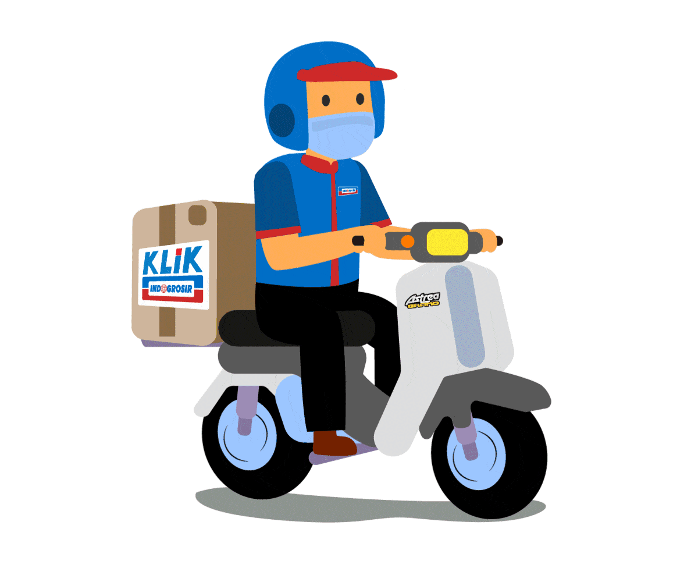

Pilih User FTP Marketing
Alamat FTP
This engine is exclusively crafted for Indogrosir Design Team

SELAMAT DATANG - MARKETING INDOGROSIR - SUB DIVISI DESAIN GRAFIS

This engine is exclusively crafted for Indogrosir Design Team